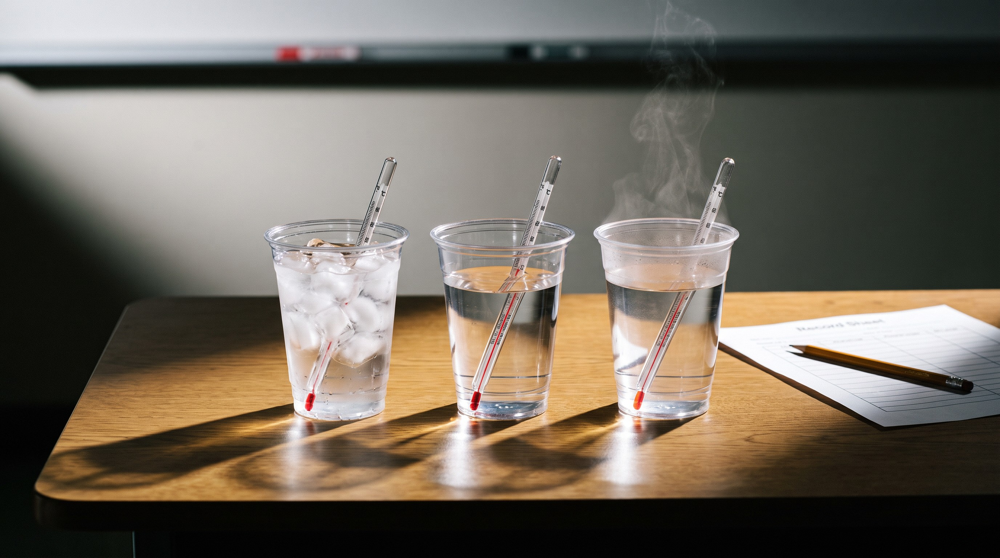

竹東國中特教班自然・115 上
🌡️ 溫度特勤隊
手會騙人 → 額溫槍 → 溫度計紅線 → 三杯水 → 校園巡邏 → 出勤闖關。每一節都有：網頁簡報、PPT（按一下才揭曉）、講義＋學習單。
IEP 2-1（10/19–11/13）：透過額溫槍與溫度計的操作，學習量測並讀出整數溫度，在無提示下依步驟完成量測與記錄。形成性評量：10/30、11/6、11/13。
🧰 互動教具
📚 六節課
第 1 節・甲 10/19（一）・乙 10/23（五）
手會騙人嗎？
同一碗水，泡過熱水的手覺得冰、泡過冰水的手覺得熱：手的感覺會騙人，要用溫度計量
第 2 節・甲 10/21（三）・乙 10/23（五）
額溫槍出動！
額溫槍六步驟：撥開瀏海→對準額頭中間→距離一根手指→按一下聽嗶→讀小數點前面的大數字→記下來
第 3 節・甲 10/23（五）・乙 10/28（三）
溫度計的紅線
熱→紅線往上爬、冷→紅線往下掉；讀法：等紅線不動、眼睛平平看、找最近的大數字再往上數小格

第 4 節・甲 10/26（一）・乙 10/30（五）
三杯水排排站
依步驟量三杯水並寫下整數溫度；數字越小越冷、越大越熱；生活應用：洗澡水約 40 度
第 5 節・甲 10/28（三）・乙 10/30（五）
校園溫度巡邏
太陽下最熱、樹蔭比較涼；量空氣溫度要等 1 分鐘再讀；依結果做決定：熱天待在樹蔭、多喝水
第 6 節・甲 10/30（五）・乙 下週
溫度特勤隊・出勤！
總複習：讀溫度計整數、額溫槍六步驟、冷熱排序；實作評量：無提示依步驟量測並記錄